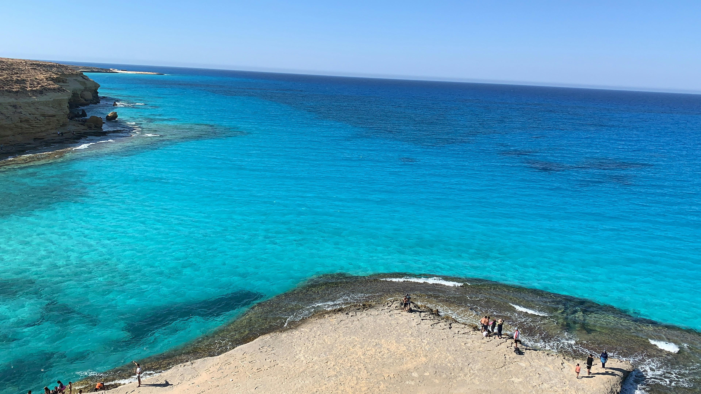
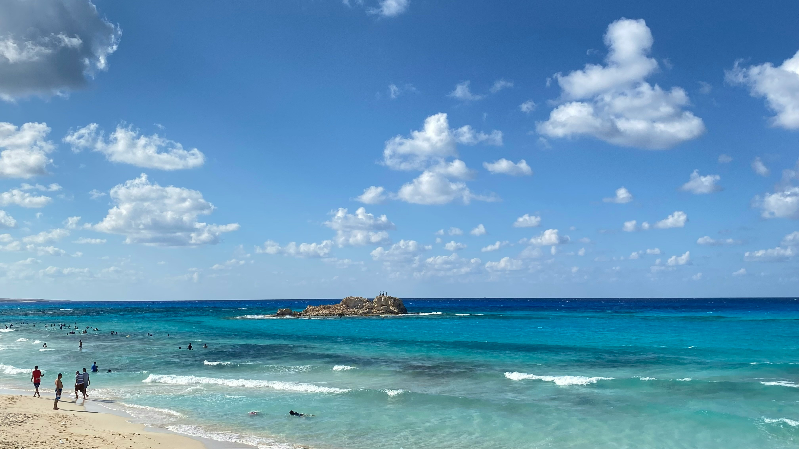

Thr price of ticket is : 50$

Discover the beauty of Mersa Matruh's breathtaking coastline!
Mersa Matruh is a stunning coastal city on Egypt's Mediterranean coast. It is famous for its turquoise waters, white sandy beaches, and peaceful atmosphere. Every year, thousands of visitors come to enjoy its natural beauty and relaxing environment.
Plan Your Trip Learn MoreTop Attractions in Mersa Matruh

Cleopatra Beach is one of the most famous attractions in Mersa Matruh. Its clear water and beautiful scenery make it a favorite destination for visitors.
Agiba Beach is known for its dramatic cliffs, crystal-blue sea, and spectacular views. It is considered one of the most beautiful beaches in Egypt.
Experience the charm of Mersa Matruh and create unforgettable memories on Egypt's Mediterranean coast.